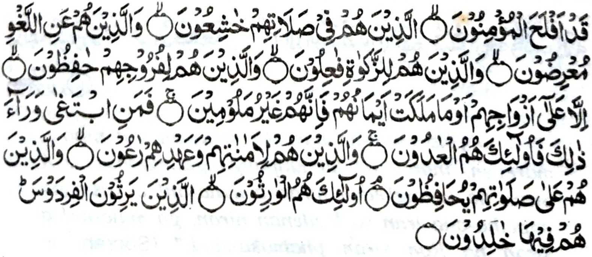

"Sabenar a phakada-ag so miyamaratiyaya. So siran a si-i ko Sambayang iran na somasangkop siran, go so siran si-i ko ilang na tatalikhodan niran, go so siran si-i ko Zakat na inggogolalan niran, go so siran si-i ko manga kaya-an niran na sisiyapen niran, inonta si-i ko manga karoma iran, o di na so miyakhapa-ar o manga tangan niran, ka mata-an! a siran na di siran non mapezoman, na sa den sa mamagingar sa salakao ro-o, na siran man na siran i mimamalawani; Go so siran si-i ko manga sarig kiran, go so diyandi kiran na sisiyapen niran, go so siran si-i ko manga Sambayang iran na papalihara-an niran; Siran man i manga waris, siran i makaphangowaris ko (Sorga) Firdaus: sa ron siran non den makakakal." [Soorah AJ-Mo'minoon:1-11]
So Nabi (Sallallaho 'Alaihi Wasallam) na Pitharo iyan. "So Firdaus i pondiong ago makalelebi ko Sorga, a ron pho-on so manga lawasa-ig iyan. So 'Arsh o Allah na ron khatago. O phamangeni kano sa Sorga, na lalayon niyo pephangeniya so Firdaus."